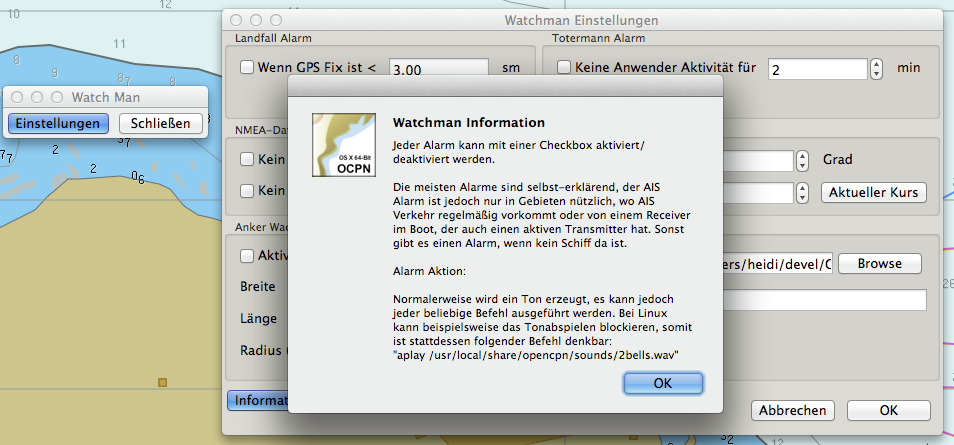
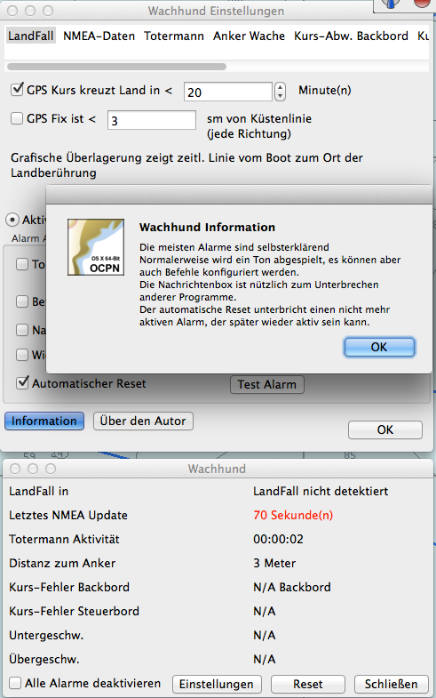

Watchman Plugin
Bei einer schwachen Crew kann das Watchman Plugin helfen. Neben einem Totermann-Alarm unterstützt es weitere Alarme bei verschiedenen Zuständen. Es verfügt über eine kurze Hilfe:

Das Watchman Plugin wurde inzwischen weiter entwickelt und nennt sich nun Watchdog (Wachhund) Plugin. Das alte Watchman Plugin wurde daher entfernt und es gibt nur noch das Wachhund Plugin in dieser aktuellen Mac OS X Version von OpenCPN:
